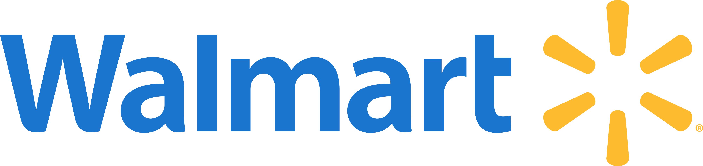
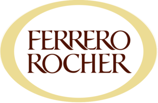

.png)
Bienvenido al portfolio de RoDev
Hola, soy Rodrigo Elizalde, un apasionado desarrollador web recientemente graduado en CoderHouse del curso del mismo y haciendo la carrera de Fronted React con la mente en el futuro para ser un programador full stack y ademas un poco sobre mi es que soy una persona proactiva, responsable y organizada, siempre estoy en busca de nuevos conocimientos y experiencias para el crecimiento en el ambito laboral tanto como en el personal. Tengo buena predisposición social y excelente trabajo en equipo.
Mis Proyectos

Proyecto CoderHouse, mi primer proyecto
Este fue mi proyecto para Coderhouse con el cual recibi el titulo de desarrollador web, el mismo estuvo inspirado en el club que soy hincha CLUB ATLETICO TEMPERLEY
Ver proyectoMis Experiencias y Estudios
Mi Primer Gran Experiencia
Trabaje como repositor, atención al cliente y deposito de Walmart Argentina desde marzo 2019 a diciembre 2019
Mi segunda Experiencia Importante Laboral
Fue ser parte de Ferrero Rocher argentina, siendo repositor de la compañia llevando a cabo tareas de deposito, reposicion y ventas desde Febrero del 2021
En cuanto a mis estudios en colegio secundario
El mismo lo finalice en 2018 con orientacion en economias en el Colegio Superior Victoria
Cursos Terciarios
Como ya les comente me encuentro haciendo la carrera de Frontend donde voy a tener la capacidad de desarrollar webs como estas y tener el conocimiento de javascrip y react js, con la idea de hacer la carrera de backend y ser un programador full stack

Contacto
Rodrigo.gasolero@gmail.com
(+54)1161027670
Buenos Aires, Argentina